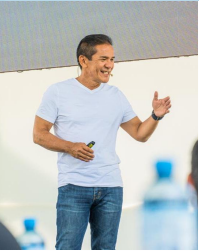
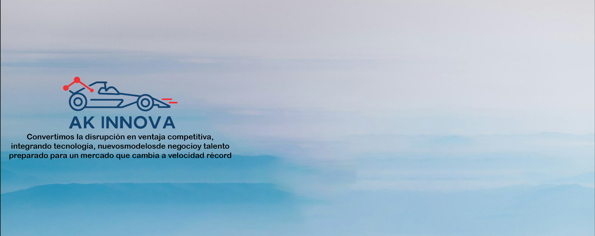

Siempre Nuevo
Conectamos visión, innovación y talento para transformar el concesionario en un ecosistema ágil, rentable y centrado en el cliente.
Ser el socio estratégico clave en la evolución integral del negocio automotriz, integrando tecnología y procesos disruptivos y ágiles.
Transformar el concesionario en un ecosistema ágil, rentable y centrado en el cliente mediante innovación y talento.
Potenciar la evolución del sector automotriz con soluciones estratégicas y tecnológicas que generen valor tangible.
Enfoques integrales para impulsar la transformación del concesionario.
Assessment, coaching ejecutivo y desarrollo de equipos de alto rendimiento, diseñado para potenciar habilidades directivas y generar culturas de innovación.
Líderes que transforman realidades, impulsan tecnología y desarrollan talento.

Constructor de culturas organizacionales centradas en innovación, autonomía y orientación al cliente. Experiencia en IA aplicada y reestructuración.

Líder en revertir tendencias negativas en negocios internacionales, estructuración de información y tecnología para decisiones acertadas.
Asesora a líderes gerenciales en transformación comercial, mejora de propuesta de valor y rentabilidad del negocio.

Acompañamos a concesionarios y empresas automotrices en su evolución digital, cultural y operativa con metodologías ágiles e inteligencia artificial.
Descubre cómo